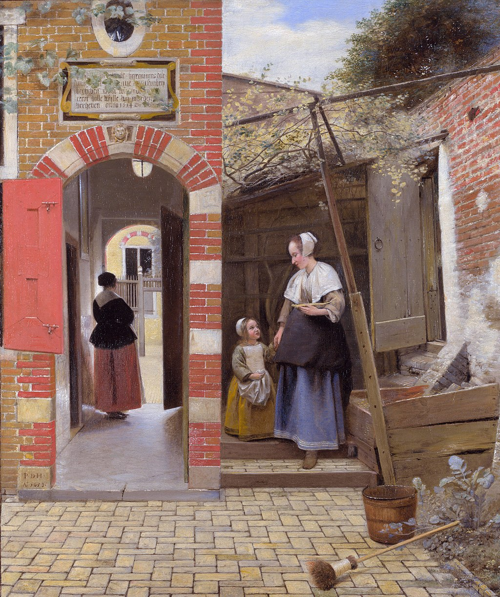

<head>
<meta charset="UTF-8" />
<meta name="keywords" content="drawing, painting" />
<meta name="description" content="drawings by Sunjy" />
<title>Sunjy</title>
<link rel="shortcut icon" type="image/x-icon" href="../../mImages/mCommon/favicon.ico" media="screen" />
<link rel="stylesheet" type="text/css" href="../../mCsses/mCommon/mCssA.css" />
<link rel="stylesheet" type="text/css" href="../../mCsses/mCommon/mCssB.css" />
<link rel="stylesheet" type="text/css" href="../../mCsses/mCommon/mCssC.css" />
<link rel="stylesheet" type="text/css" href="../../mCsses/mCommon/mCssD.css" />
<link rel="stylesheet" type="text/css" href="../../mCsses/mContent/mCssA.css" />
<link rel="stylesheet" type="text/css" href="../../mCsses/mContent/mCssB.css" />
<link rel="stylesheet" type="text/css" href="../../mCsses/mContent/mCssC.css" />
<link rel="stylesheet" type="text/css" href="../../mCsses/mContent/mCssD.css" />
</head>
<script type="text/javascript" src="../../mScripts/mContent/mContentAA.js" /></script>
<script type="text/javascript" src="../../mScripts/mContent/mContentAB.js" /></script>
<script type="text/javascript" src="../../mScripts/mContent/mContentAC.js" /></script>
<script type="text/javascript" src="../../mScripts/mContent/mContentAD.js" /></script>
<script type="text/javascript"></script> 
<script type="text/javascript">
document.write('<div class="mImgAbsolute"></div>');
/*
document.write('<p class="mFontSizeBColor" />From a white paper...</p>');
document.write('<table class="center"><tr><td>');
document.write('');
document.write('</td></tr></table>');
*/
</script>


<script type="text/javascript">
document.write('<p class="mFontSizeBColor" />The Courtyard of a House in Delft</p>');
document.write('<p class="mFontSizeSColor" />“The Courtyard of a House in Delft” by Pieter de Hooch portrays domestic architecture typical of De Hooch’s and Vermeer’s Delft, with building, courtyard, and people engaged in everyday activities.<br><br>To the left, an archway entrance of brick and stone leads from a paved patio to a passageway through a house, where a woman dressed formally in black and red stands looking away to the street beyond.<br><br>To the right is a vine growing over a wooden structure. There is an open door through the brick wall to the far right, and a woman leading a child down steps to the courtyard.<br><br>This painting is divided into two halves. There are subtle effects that are at variance with the overall impression of harmony in the composition.<br><br>The brickwork of the wall on the right is dilapidated compared to the house on the left. The scene on the right is more chaotic and messy than the left half.<br><br>Nature is invading the courtyard on the right with the plant border, the shrubs above the woman and child. The woman on the left looks more formally dressed and is not engaged in meaningful work as she looks to the outside world.<br><br>The woman on the right seems to be a servant as she holds a dish in her hand. There is also a bucket, and a broom has been left in the courtyard. She leads the young child back into the house.<br><br>Perhaps the moral of the story is in stone tablet above the doorway, which was initially over the entrance of a Cloister in Delft.<br><br>The Cloister was suppressed, and this tablet was removed but set into the wall of this garden. The tablet reads:<br><br> “This is in Saint Jerome’s dale<br>please be patient and meek<br>for we must first descend<br>if we wish to be raised.<br> 1614″.<br><br>The painting is signed and dated to the left on the archway with “P.D.H. / A 1658”.<br><br>Delft School of Painting<br><br>The Delft School of Painting is a category of mid-17th-century Dutch Golden Age painting named after its home base, Delft.<br><br>It is best known for images of domestic life, views of households, church interiors, courtyards, squares and the streets of that city.<br><br>The Delft School of the Painting was made famous by Pieter de Hooch and Johannes Vermeer.<br><br>Besides the genres most closely associated with Delft painters, artists in the city continued to produce still life and history paintings, portraits for patrons and decorative pieces of art that reflected the general tendencies in Dutch art of the period.<br></p>');
document.write('<table class="center" /><tr><td>');
document.write('<br>To the left, an archway entrance of brick and stone leads from a paved patio to a passageway through a house, where a woman dressed formally in black and red stands looking away to the street beyond.<br><br>To the right is a vine growing over a wooden structure. There is an open door through the brick wall to the far right, and a woman leading a child down steps to the courtyard.<br><br>This painting is divided into two halves. There are subtle effects that are at variance with the overall impression of harmony in the composition.<br><br>The brickwork of the wall on the right is dilapidated compared to the house on the left. The scene on the right is more chaotic and messy than the left half.<br><br>Nature is invading the courtyard on the right with the plant border, the shrubs above the woman and child. The woman on the left looks more formally dressed and is not engaged in meaningful work as she looks to the outside world.<br><br>The woman on the right seems to be a servant as she holds a dish in her hand. There is also a bucket, and a broom has been left in the courtyard. She leads the young child back into the house.<br><br>Perhaps the moral of the story is in stone tablet above the doorway, which was initially over the entrance of a Cloister in Delft.<br><br>The Cloister was suppressed, and this tablet was removed but set into the wall of this garden. The tablet reads:<br><br> “This is in Saint Jerome’s dale<br>please be patient and meek<br>for we must first descend<br>if we wish to be raised.<br> 1614″.<br><br>The painting is signed and dated to the left on the archway with “P.D.H. / A 1658”.<br><br>Delft School of Painting<br><br>The Delft School of Painting is a category of mid-17th-century Dutch Golden Age painting named after its home base, Delft.<br><br>It is best known for images of domestic life, views of households, church interiors, courtyards, squares and the streets of that city.<br><br>The Delft School of the Painting was made famous by Pieter de Hooch and Johannes Vermeer.<br><br>Besides the genres most closely associated with Delft painters, artists in the city continued to produce still life and history paintings, portraits for patrons and decorative pieces of art that reflected the general tendencies in Dutch art of the period.<br>" />');
document.write('</td></tr></table>');
</script>


